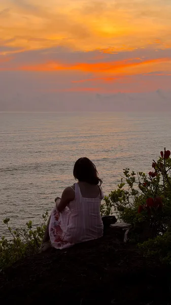

Day 1
To Vitamin Sea
BusDescription: Took an overnight bus from Bengaluru, checked into Zostel, met new people, worked, rented a scooty, explored Gokarna, caught sunset at Jatayu Tirtha, and danced till 2 AM.
Notes: Don’t miss the sunset at Jatayu Tirtha. It’s one of those places where the views are worth the ride.
Links: Restaurant Link